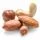
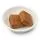

INGREDIENTES
 1 kg massa de mandioca
1 kg massa de mandioca- 200 g de castanha
 200 g de amendoim
200 g de amendoim 1 xícara de café solúvel forte
1 xícara de café solúvel forte 3 xícaras de açúcar
3 xícaras de açúcar 1 coco seco passado no liquidificador
1 coco seco passado no liquidificador 2 margarina de 250 g cada
2 margarina de 250 g cada 10 ovos
10 ovos- 50 g de cravo da Índia
 50g de erva doce triturado
50g de erva doce triturado
Modo de preparo
Tempo: 1 hora
- Cozinhe a mandioca.
- Acrescente no cozimento 2 tabletes de caldo de costela.
- Dê uma pré-fritada na calabresa junto com o bacon com um pouco de óleo.
- Acrescente junto a ela a cebola e termine de fritar.
- Acrescente o alho e mais 1 caldo de costela.
- Bata no liquidificador a mandioca junto com a água que cozinhou.
- Junte a mistura com a fritura no fogo baixo sempre mexendo para que não grude no fundo da
panela.
- Acrescente o tomate e a cebolinha (a gosto).
- Acrescente aos poucos os temperos, sempre experimentando para ver se está bom de sal.